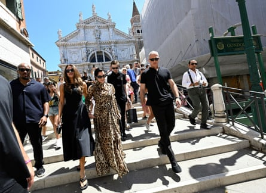
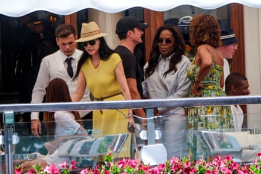
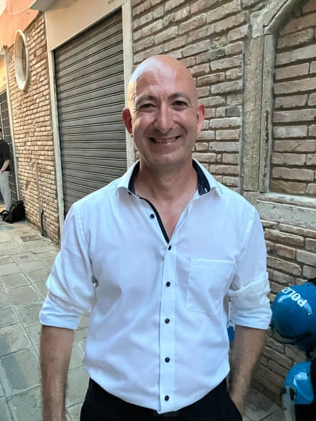
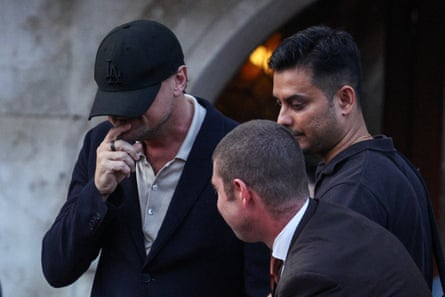

The Black Death. Byron on the prowl. Rising water levels. Cruise ships the size of city blocks. Venice may have endured many tumultuous events and sinister challenges over the centuries but rarely in its long history has it had to contend with an issue quite as odd and quite as divisive as the sort-of nuptials of the world’s fourth-richest person.
Friday found the lagoon city doing what it does best: looking gorgeous and slightly unreal as it played host to thousands of tourists who posed in silver-prowed gondolas, chugged mid-morning spritzes or simply wilted in the muggy heat.
But across the water from St Mark’s Square, Jeff Bezos and Lauren Sánchez’s big day was getting under way. The precise choreography of events may not be entirely clear, but things were definitely happening on the tiny island of San Giorgio Maggiore, where the couple are due to pledge eternal love and fidelity before a crowd of 200 mainly famous guests.
US media personality Kristen Jenner (C) and daughter Khloe Kardashian (C-L) go for a walk in Venice.Photograph: Daniel Dal Zennaro/EPA
A handful of camera crews mooched around the entrance to the Giorgio Cini foundation, where a pair of tight-lipped but polite individuals sat before monitors under a gazebo and politely fended off requests for information.
And no, they really didn’t know when the ceremony would begin. According to reports, the couple have already tied the knot in the US and Friday’s event is merely symbolic.
A hundred metres away, hosing down the deck of his boat in the island’s harbour, one local man offered a laconic and not untypical take on what has become known, a little tediously, as “the wedding of the century”.
What did he make of all the fuss? “I’m not thinking about it at all,” he said. “I don’t care.”
The wedding celebrations – which began in earnest on Thursday night and are due to culminate in a reception held at the Arsenale historic shipyard complex on Saturday – have split the city into three groups. There are those, like the yachtsman, who simply don’t care; there are those furious that Venice is prostrating itself before a man with an estimated net worth of , and there are those who, like the city’s mayor, see the £40m extravaganza as a welcome money-spinner and a wonderful showcase for the area’s attractions.
Bezos and Sánchez’s famous friends do not appear to have been put off by the controversy, which has seen imaginative protests over the past few days – including rumours of a reserve armada of canal-blocking inflatable crocodiles .
Oprah Winfrey and Orlando Bloom leave Gritti Palace Hotel, on the second day of the wedding festivities of Amazon founder Jeff Bezos and journalist Lauren Sanchez.Photograph: Manuel Silvestri/Reuters
Thursday night’s welcome party in the cloisters of the Madonna dell’Orto, a 14th-century church in the Cannaregio area, was attended by celebrities including Leonardo DiCaprio, Oprah Winfrey, Kim Kardashian, Ivanka Trump, Tom Brady and Orlando Bloom.
But it was followed by yet another resourceful display of disapproval. A little before 11pm, a green laser was used to spell out the slogan, “No Kings, No Bezos”, on the belltower in St Mark’s Square. Similar guerrilla actions over recent days have included the unfurling of a banner reading: “If you can rent Venice for your wedding you can pay more tax.”

Photograph: Antonio Calanni/AP
Those behind the protests – a coalition of groups angered by the selling-out of the city, housing activists and anti-cruise ship campaigners – say their punning “No Space for Bezos” alliance has already paid off. They claim their sustained pressure, not least the threat to unleash the blow-up crocodile fleet, prompted the couple to switch the location of the reception from the Scuola Grande della Misericordia, a majestic 16th-century building in the city centre, to the more private Arsenale.
Others have a different take on the superyachts and the 90 private jets that have descended on Venice this week. The city’s mayor, Luigi Brugnaro, has dismissed the protesters as “shameful” and said the Bezos-Sánchez union will fill Venetian coffers.
That view is shared by Italy’s tourism minister, Daniela Santanchè.
“There will be photos everywhere, social media will go wild over the bride’s dress, over the ceremony,” she told the Associated Press.
“All of this translates into a massive free publicity campaign. In fact, because they will spend a lot of money, they will enrich Venice – our shopkeepers, artisans, restaurateurs, hotels. So it’s a great opportunity both for spending and for promoting Italy in the world.”
One man, however, has his very own reasons for wishing the Amazon founder all the best.
Cagdas Halicilar, a 47-year-old German who runs a delivery truck company, has a sideline as a pretty convincing Bezos lookalike.
Bezos lookalike Cagdas HalicilarPhotograph: Sam Jones/The Guardian
He had travelled to Venice to greet and confound the crowds and was also hoping for a quick encounter with Bezos so that he could give him the €3,000 (£2,600) bottle of whiskey he’d bought him as a wedding present.
“I realised the resemblance three years ago,” he said. “My life has changed a lot since then. Wherever I go, people are like, ‘Jeff! Jeff!’.”
He had come tantalisingly close to his doppelgänger on Thursday night when a beautiful burgundy boat cruised past him.
“He saw me and I waved and he gave me a thumbs-up,” said Halicilar. “I was so happy. I cried.”
Leonardo DiCaprio keeping a low profile while boarding a boat.Photograph: Guglielmo Mangiapane/Reuters
If the German delivery boss does finally get to meet Bezos, he has a simple message.
“I will just tell him that I’m proud to look like him. That’s all. He’s not arrogant and he has a big heart. He makes people smile and I’m a huge fan.”
(He also hopes that if Bezos is reading this piece, his people can arrange a meeting to hand over the whiskey.)
As the day wore on, the secret preparations continued and the vicious June sun beat down on tourists, guests and journalists, one visitor making her way around San Giorgio Maggiore shook her head. This was all proof, if further proof were needed, of the awesome power of the 21st-century super-rich.
“It’s grotesque,” said the woman from northern Spain. “Two hundred-and-fifty guests and a bill of €50m? This is why I don’t buy anything on Amazon.”